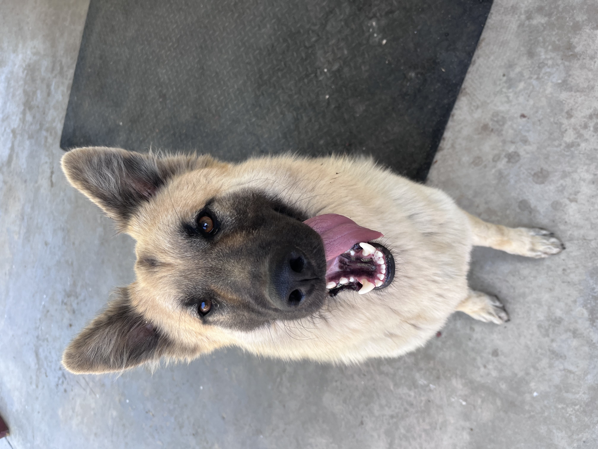
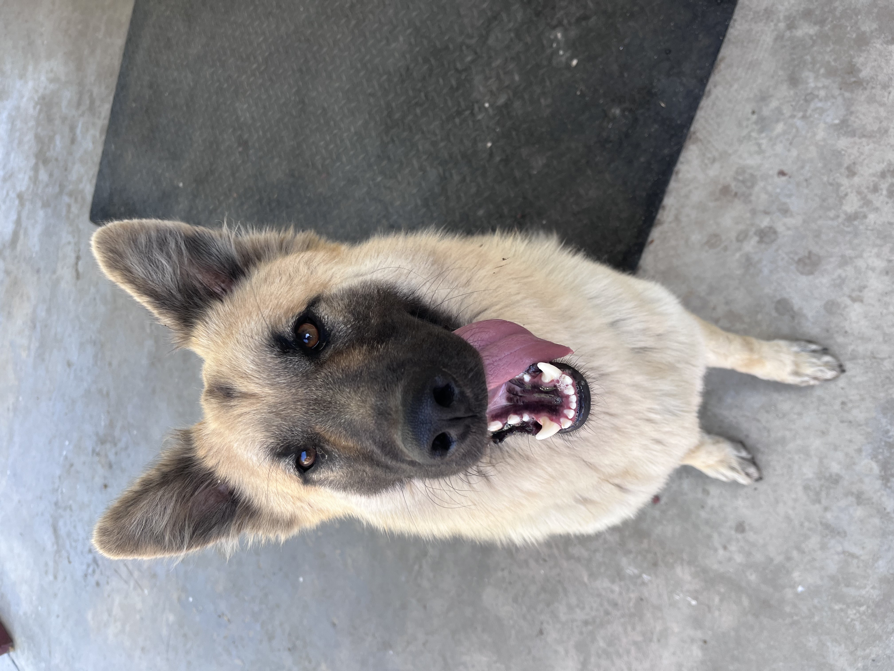

Kenia Garcia Leon
First Year student at the University of California Riverside. A commuter student from Ontario California, who is majoring in Sociology that later plans to pursue a masters in Sociology with a Concentration in Law or possibly in Psychology. As a first generation college student I aspire to graduate and pursue a career in either social work or counseling. As a student I look to showcase the most of my academic abilities while expanding my knowledge. As a first year I aspire to be a part of campus in a cultural and academic setting. Meaning discovering college organizations that open me to my ethnicity and to strengthening my knowledge and making the most of my experience at UCR. I plan to become more social to make the most of my college experience and gain various friendships of a lifetime while on campus. On campus I dedicate my time mostly to my studies and discovering the various opportunities UCR offers to its students.
At home I dedicate my time to my hobbies of: reading, organizing and music. I pursue my dedication in music by expanding my music capabilities through instruments. As a previous violin player I’ve expanded my music knowledge to apply my skills to that of guitar pursuing my interest in self teaching how to use the guitar. Have expanded my interest in music through discovering and enjoying listening to various music genres and often indulge in concerts. As a hobby of reading I look forward to spending much of my time at local bookstores and cafes dedicating time to discovering new books and discovering a passion for writing. Writing is a self pursued interest of mine used to discover various capabilities of mine all revolving around reading or the idea of writing for the entertainment of others as well. Organizing often comes to my benefit of understanding things I need to get done and when I need to get them done. Meaning I look to organize for my own benefit of expanding my various needs and things to do throughout the day especially as a college student.
I serve as a part of the City of Ontario’s Recreation Department. I enjoy using my skills and expanding my skills as a recreation leader for the city where I help in various city set events and Various activities that allow me to help others. In this department I work to help those in the community expand their interest while feeling a part of the community. Meaning I have often helped people that are children, young adults, and seniors as well. In this job I have expanded my understanding of community by using my skills to only make people feel welcome in the community and allowing them to feel open to coming into the various city events and activities offered at various city facilities as well. In this job I’ve learned how to collaborate with others and how to expand my social skills to the benefit of the community and myself as well.
Experience
Recreation Leader
• Led special Events for Children
• Daycamp activities watching over children
• Experience with Adult Sports, Youth Sports, Children Clubs
Link Leader
• Mentor Students through the first years of High School
• Encourage Student Envolvement etc
AVID Student
• Tutored students in High School
• Colloborated in Student Projects
• Active Student Involvement
• Encouraged Academic Integrity
Education
UC Riverside
Ontario High School
Oaks Middle School
Portfolio


